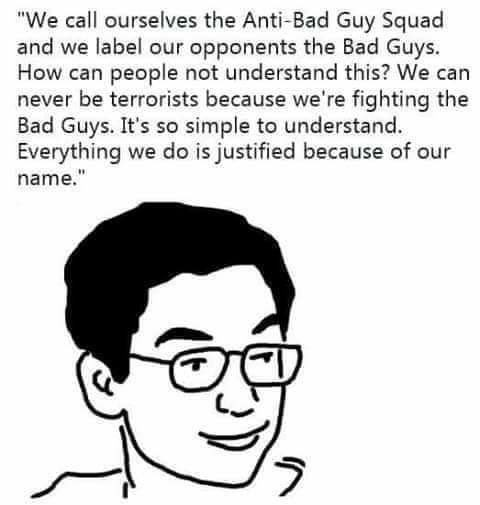
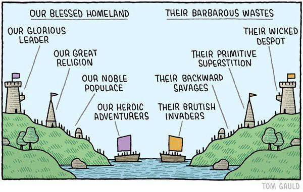

Morality And Selfishness FAQs
Understanding Morality with Game Theory and Biological Realism
1. Introduction (Start Here)
Many of the questions on this page address the same objections and misunderstandings, so it will feel repetitive and redundant to read all the questions and answers on this page. If you would like to read an actual essay that would answer many potential questions in a more structured format, then we recommend the following:
- What Is Morality?: This essay explains what morality is.
- The Case Against Moral Realism: This essay is an explicit refutation against moral realism and most secular conceptions of morality (though it’s relevant to non-secular conceptions as well).
- What Is Value?: This essay explains what value is.
- Refuting Sam Harris’s Argument For Objective Morality.
Summary of this Ethical Philosophy:
- Morality depends on value, and value is perspective-dependent. There is no objective foundation for value. Likewise for morality.
- Morality is heavily shaped by evolution and memetic traditions and fashions. Most people’s moral values were formed in a 6-step process.
- Every purported example of altruism occurring in nature is actually selfishness.
- It’s unreasonable to oppose natural phenomena that are beyond mankind’s control. For example, it’s unreasonable to oppose hierarchy because social hierarchies are natural and they’re often strongly influenced by people’s genetics, which we cannot change. For similar reasons, it’s also pointless to oppose violence in nature, to oppose the existence of life (efilism), or to be vegan if it’s necessary for humans to eat animals in order to be healthy.
- Evolutionary Biology is the best initial field to study for forming social frameworks.
- “Moral Progress” is an illusion that is primarily created by the advancement of technology.
- Without cooperation, life becomes zero-sum when the population reaches the carrying capacity of its environment.
Note: Given that there are so many diverse ideas, viewpoints, and moral philosophies that a random person could have about morality, it’s likely that only a fraction of these FAQs will answer any random people’s questions or beliefs about morality. But many of these questions are discussed often, and it’s convenient for other pages on this website to link to these questions and explanations when relevant, hence why this page exists.
2. General Questions
2.1. Where does morality come from?
In this context, we are defining morality as “what a person thinks people should and shouldn’t do, i.e. what a person wants other people to do, according to their values”, which is usually coupled with the assumption/belief that those values are objective. More simply, morality may be defined as the belief in objective value. Note that “morality” has many different definitions, so it is highly vulnerable to the Sapir-Whorf Effect.
Morality originates from one’s personal values, in a 6-step process that typically consists of:
- Collective values.
- The individual internalization of collective values.
- The assumption that collective values are objective, and thus “moral”.
- A folk theory of morality.
- Individual and collective moral myths.
- Pattern-matching situations with evaluated moral judgements and assumptions to situations that are unevaluated or need to be re-evaluated.
Read More: What is Morality?
2.2. How is morality related to memetic traditions?
To a large extent, culture is arbitrary. Other aspects are less arbitrary in the sense that there are strong tendencies for different cultures to arrive at the same customs. Many of these less arbitrary customs and taboos originated because they increased the reproductive success of the people who practiced them to the point of becoming dominant habits within the culture. These are also known as traditions. Over time, these traditions and taboos come to be collective values of the practicing cultures. In turn, they form a substantial basis for what is deemed “moral” and “immoral”. The traditions then propagate onto the next generations via the individual internalization of collective values for every individual.
More Information: What is Morality? - Blithering Genius
2.3. How has evolution affected human morality?
Main Essay: Evolution and Morality - Blithering Genius.
- Evolution selected for egoism and selfishness over altruism. Hence, altruism is a losing reproductive strategy whenever there is a competing pro-selfishness strategy.
- Since mutual cooperation among selfishness individuals enables each individual to gain more than if they each worked alone, humans evolved a emotional accounting system to keep track of what they owe and what they are owed from their respective communities.
- Humans have a natural intuition that life is good and life should be preserved in many cases, even when it’s not very practical (e.g. pro-lifers being against abortion, people against death penalties, people against suicide, assisted suicide, or even suicide with dignity, etc).
- Humans are more likely to favor their children, spouses, family, friends, and other people in their social networks and communities over outsiders, in terms of perks, special advice/tips/tricks, and goods (cronyism/tribalism/favoritism).
- Humans are tribalistic, and develop their own internal labels for who to designate within their in-groups and out-groups.
- Humanists view love as sacred, even though it doesn’t exist merely to make humans feel good. Likewise, people may feel spiteful and vengeful when their partners cheat or break up with them. Regarding cheating, this implicitly causes humans to value consent.
- Humans dislike loneliness and favor being in communities and groups.
- Humans will tend to justify themselves, even if doing so is hypocritical or wrong from the collective moral perspective.
2.4. Why is equality a common moral value?
There are various reasons why it makes sense to value equality from a societal perspective:
- Social Stability: Societies that strive for equality may be more stable than less equal societies, depending on the balance of power between all of society’s members. Equality is more likely to be achieved when power has a relatively equal distribution among a population. For instance, it’s not easy for a dictator to rise to amass great power and rule with an iron fist when every other citizen is armed with a gun.
- Uniformity: The more uniform everything is in an industrial civilization, the more interchangeable and thus cheaper everything becomes.
- Meritocracy: Equality is necessary for meritocracy. If people are born with less equal opportunities than others, then human capital is more likely to be misallocated.
- Economic Prosperity: Reducing economic inequality may increase economic prosperity and growth. When wealth is distributed more evenly, a larger portion of the population has the means to participate in economic activities.
There are also historical reasons why modern culture values equality. Equality and altruism are both Christian values. Humanism is the main ideology of the Modern West and it arose from Humanism. The Holocaust, the defeat of the Nazis, and the baby boom that caused the 1960s counter-culture were the most pivotal series of social events in the 20th century. It strengthened the Western value in equality to become a dominant social value. It initiated the transition from Christianity to Humanism and Wokism]].
Thomas Jefferson’s “all men are created equal” was about rejecting the divine right of kings. However, some ideologues ignore this context and teach that the Founding Fathers of the United States believed in their ideological definition of equality, as opposed to stability or freedom. This is a misinterpretation, and thus not true.
There are limitations to valuing equality. If we made everyone 100% equal in wealth, then other inequalities would matter more anyway, e.g. genetic inequality, sexual inequality, moral inequality, etc. Only 20% of people can be in the top 20% of anything (wealth, social status, talents, looks, etc). Since humans will always be unequal in some way, it’s futile to prioritize wealth and other forms of energy equality as a moral goal. The same argument can also be made against demographic quotas and why they’re equally pointless to pursue. There are also no reasons why people have to value equality from a purely individualist perspective. Equality is a means to an end. From a biological perspective, the best society is the one that does everything to serve you, while you give nothing in return. Humans are intrinsically selfish.
List of things that not everybody can have in a society:
- Genes that are optimized for doing some particular task(s) or advantage(s).
- Intelligence
- Other Genetic Tradeoffs
- Social Status
- Fame & Fortune
- Wealth (to some extent)
- Beauty
- Equality
- Et Cetera
To some extent, Equality is more of an idealistic concept, rather than a realistic concept. It’s something that people and societies want to aim for in many contexts. However, it’s not always possible, since it’s always defined relative to the current condition, and since desires are limitless.
Read more: What caused the rise of wokism?
2.5. Why are consequentialist ethics better than deontological ethics?
Some people view morality as a list of rules that shall never be violated. The justification at a macro-level is that these rules have consequences that cannot be considered at a micro-level. To put this in perspective, let’s take the example of lying. If a drug addict lies to a police officer about the presence of cocaine in his house, he can avoid getting arrested. But if too many people lie, then people won’t trust each other. Here the micro level concern is getting arrested, and the macro level concern is social trust.1
Deontology needlessly elevates the value of rules over the consequences of them. Rules cannot be reasonably formed without some sort of appeal to consequence, because it’s not possible to judge a value without another value to judge it by. When rules and values are made without appreciating the consequences of them, they become arbitrary and shitty. For example, you can’t explain why a rule saying that a man can have sex with whichever women he wants is a bad rule without an appeal to the consequences of that rule. You could argue that the first rule violates the autonomy of the women. However, you would need to justify why women are entitled to a certain amount of autonomy, which requires appealing to the consequences of implementing that autonomy. In these scenarios, the appeal of the Non-Aggression comes from reducing the amount of coercion that occurs. If the justification for the NAP ultimately appeals to consequences, then why not evaluate the actions and specific rules you make based on the consequences themselves, rather than some general rule that doesn’t always work out?
It is true that rules are important for setting precedents. If people stole and pirated whenever they want in a society, people would be less incentivized to create wealth, which is a net negative. On the other hand, respecting private property creates a macro-level effect of encouraging wealth because people will think it won’t be stolen. However, would 10 acts of fraud intended to fund research into embryo selection be ethical? I would say yes – you increase the amount of utility in the society without severely damaging the precedent of private property. 10 acts of fraud are the kind of crime that makes the papers for a few days until people forget about it, rather than something that seriously undermines people’s trust.
Sure, people frequently engaging in actions that break rules would undermine the precedents that these rules uphold. However, there are clearly violations of rules that don’t break the precedent they set. Let’s take private property as an example. When people having a right to property, that incentivizes them to protect it and create more value. Taxing people at the threat of incarceration would be a violation of private property. However, if these taxes are used for institutions that help uphold private property, then there is no moral objection to it as they are massively preventing the very thing they are violating.
Read More: When Appeal to Consequences is a Valid Fallacy.
2.6. Aren’t technological advancements driven by improving morality?
No, this is backwards. “Moral progress” is an illusion, and the illusion is created by technological advancements.
2.7. What’s the difference between moral relativism, amoralism, moral nihilism, etc?
Moral Relativism is the position that morality is subjective and perspective-dependent. This term covers a range of different philosophical positions with different nuances. Moral Relativists believe that different individuals, groups, and cultures can all have different conceptions of morality that are each justified according to their own perspectives.
Amoralism is an absence of, indifference towards, disregard for, or incapacity for morality. We define “amoral” similar to how most people define “atheist”. Atheism is a doctrine where its believers don’t believe in or reject the existence of “God”. Amoralism is a doctrine where its believers reject morality.
Moral Nihilism is the meta-ethical view that nothing is morally right or morally wrong. In some contexts, moral nihilism may be used in a way that represents our position on morality. In other contexts, it does not represent our position on morality. So, I prefer “Amoralism” over “Moral Nihilism” in most contexts.
Another term (that I invented) is “post-Overton” or “post-Overtonism”. Under a post-Overton conception of morality, one no longer pattern matches between different situations to figure out what seems “moral”. Instead, a post-Overtonist directs their actions to maximize their personal values, even if it’s only for psychological benefit. People who still believe in morality are trying to shift the Overton window and one direction or another. They are still in the pattern-matching phase of morality where they have still failed to recognize that it is a delusion.
2.8. What is the difference between morality and ethics?
“Ethics” and “Morality” are often used interchangeably in common discourse. But when they are used for more specific connotations, they are as follows:
- Ethics is generally considered the standards of “good” and “bad”, “right” or “wrong” that are imposed by some outside group, (e.g. a society or profession).
- Morality is one’s own personal sense of right and wrong. It’s not imposed by anyone. It’s just what you personally think is “good” and “bad”.
Morality and Ethics can both conflict. For example, one might live in a society that agrees on a certain code of conduct that you personally disagree with. For example, you might think that free speech is always going to be right, but live somewhere that if people think defaming religious icons for example is wrong. The ethics say that you should do what the society imposes on you, whereas your morals (your own personal beliefs about what’s right and wrong) say you should do something else. Your ethics and your morality disagree.
It is important to note that philosophers are generally talking about what is universally right or wrong, when they’re using these terms. They’re not talking about what a specific society says, or what a person thinks. They’re talking about what is right or wrong universally.
Some philosophers believe that all we can say about “good” and “bad” is just what societies or groups say (ethics). This is called Relativism.
Others think that all we can say about right and wrong is what we personally feel (morals, using this distinction). This is called Emotivism.
However, philosophers rarely use these two terms, “ethics” and “morals” to mean two different concepts in philosophy. Generally they’re going to be interchangeable.
3. Pragmatosphere Specific Questions
3.1. What is Biological Realism?
Video: Biological Realism - Blithering Genius.
Biological Realism is a collection of truth claims and implications regarding evolutionary biology for humans, and life more generally. It encompasses the following topics and concepts:
- Evolution
- The Phenocentric Theory of Biological Purpose
- Race Realism
- Sex Realism
- Evolutionary Psychology
- Life Is Selfish, Not Altruistic
- Game Theory
- Life is Violent
- Inevitable Mortality
- Population Dynamics
- Eugenics vs Dysgenics (with respect to biological value and adaptations)
- Motivation Theory: Humans and other life don’t live to be happy. They are designed to reproduce.
- The Effects & Dangers of Supernormal Stimuli (Superstimuli)
- The Dating Black Pill: Lookism, Game Theory, and Evolution Awareness2
- Diet Realism: Diets like the Carnivore Diet, Veganism3, highly-processed foods, etc are unhealthy.
- Forest fires are natural. They have to occur regularly.
Some of these beliefs are more widely accepted and/or implicitly acknowledged than others. Some online communities may also accept some aspects of biological realism, while denying other aspects. For example, most of the Human BioDiversity (HBD) community tends to accept race realism, sex realism, and eugenics/dysgenics, while failing to accept the phenocentric theory of evolution, population dynamics, absolute selfishness, and sometimes even morality and motivation. Other times, people might partially accept some of these concepts, while misunderstanding the rest of them (e.g. support for race idealism, kin altruism, top-down eugenics, etc). This FAQs page focuses on morality and selfishness specifically.
To be clear, biological realism is not a value system or a lifestyle. It’s just a set of truth claims. Accepting biological realism may influence a person’s values. But accepting biological realism does not logically commit a believer to value reproduction, or anything really. Efilism is an example of a philosophy that is heavily influenced by biological realism that rejects life.
Read More: Biological Realism Essay / Video Links.
Do you view humans to simply be a biological species, like any other?
Yes. Humans cannot transcend evolution. Technology does not make humans invincible. Just because humans are the most intelligent form of life ever known to have existed, that doesn’t mean that humans aren’t susceptible to the same population dynamics and other biological realities that all other animals must face. It is still the case that genes are largely responsible for predetermining every person’s destiny, that whoever has the most children is destined to have their genes become more common in the future, and that human populations have the potential to exceed their carrying capacities to the point of causing war, disease, and famine in order to decrease their populations.
3.3. What is Humanism?
See: Analyzing Humanism / Wokism / Soulism.
Humanism is a secular, liberal, hedonistic, pro-altruism utopian ideology and religion that has supplanted Christianity as the main moral value system of the modern Western World. Humanists take for granted that personal happiness is the purpose of life, technology is always good, humans are naturally morally good, sympathy is always “better” than hate, and that tolerance of other cultures and beliefs is good, as long as they agree with humanism.
Like all religions, there are different varieties of humanism, so this general description doesn’t necessarily describe exactly what all humanists believe, but it does describe the gist and general tenants of the ideology. In most cases, the main distinction(s) between each of the different factions of humanists is they can’t all agree on what is “morally good”. Humanism may also be called Soulism. Humanism/Soulism is related to Wokism, but there are some differences between the two.
Humanism is popular because it appeals to moral intuitions in the absence of traditional supernatural religious beliefs. Humanism is not a legitimate philosophy because it doesn’t have a theory of truth, nor a theory of value, nor a theory of society. When we investigate and critique the Humanist Manifesto, we find that it’s all just rhetoric designed to affirm prior intuitions, rather than question them. The main goal of philosophy is to question assumptions, and every real philosophy ought to do that.
The third sense of “humanism” defined on Wiktionary is the most similar to this section’s definition:
An ethical system that centers on humans and their values, needs, interests, abilities, dignity and freedom; especially used for a secular one which rejects theistic religion and superstition.
3.4. What are the differences between Christianity, Humanism, and Wokism?
All three ideologies have many varieties. They are all pro-altruism and pro-hedonism, with the exception of some varieties of Christianity. There is a lot of overlap between Christianity and Humanism, and between Humanism and Wokism. However, Christianity and Wokism don’t overlap very much. It’s rare for someone to be both religious and wokist.
The main differences between Christianity and Humanism are:
- Christianity is religious, whereas Humanism is secular.
- Christianity is more likely to accept natural biological values than Humanism.
- Christianity is more right-leaning, whereas Humanists can be virtually any political ideology.
- Humanists are more diverse in their political, philosophical, and ideological beliefs.
Aside from the different beliefs on religion, the compatibility between Christianity and Humanism depends on the variants of Christianity and Humanism in question. Christianity and Humanism are both pro-altruism, so Humanist values are often compatible with Christian values and vice versa.
The main differences between Humanism and Wokism are:
- Wokism is left-wing, whereas Humanism isn’t necessarily left-wing.
- Most Conservatives have Humanist values.
- Right-Libertarians aren’t leftist, although they associate oppression with the state, and they sometimes virtue-signal. Right-Libertarians are arguably wokist in that sense, but they are much less likely to reject or invert biological values.
- Transhumanists aren’t usually wokist.
- Ayn Randian Objectivists aren’t wokists, but they are humanists.
- Wokism doesn’t necessarily have to be secular or pro-technology, unlike Humanists.
- Christians and Muslims can still be wokist and leftist, even if it’s not common.
- Communism doesn’t have to secular. Religious Communists have existed, and many exist today.
- Neo-Luddites / Anarcho-Primitivists aren’t pro-technology, and don’t have to be secular.
- Wokism tends to feature higher virtue-signaling.
- Wokism puts greater emphasis on systemic oppression.
The vast majority of Wokists could also be classified as Humanists, but not every Humanist is a Wokist.
We can roughly summarize the chronology of the most dominant ideologies in the West as follows:
- Christianity was the historically dominant ideology of the West for nearly two millennia.
- Social Darwinism arose in the mid-to-late-1800s. It peaked in the West from the 1900s to World War II.
- Humanism / Soulism arose after World War II.
- Wokism arose as the leftist version of Humanism during the 1960s to the current year (2025).
Social Darwinism died out in the mid-1900s, many people still follow Christianity, some people are just Humanists or Soulists, and some people are Wokists. Christianity -> Humanism -> Wokism.
Read more: What Caused The Rise of Wokism?
3.5. Why does the Abyss for Truth and Value matter?
Accepting the abyss {(1), (2), (3), (4)} enables us to reject assumptions about how we should live our lives.
In my own experience, when I was Efilist-leaning, it was a problem for me because my desires contradicted what seemed to have been the “right thing to do”. Once I recognized that there’s no objective basis for morality, this enabled me to reject the values and beliefs that conflicted with my desires. So, recognizing that there’s an abyss for value and morality has helped me.
Recognizing that biological value arises from causality by the loop of reproduction also gives me a way to “immanentize the abyss” by fulfilling my objective purpose and what I evolved to do (reproduction).
3.6. In terms of should’s and shouldn’ts, what would be an ideal ethical system?
From a societal perspective, we favor rational humanism and a rationally designed culture. The society would value cooperation and shun defecting. Legally speaking, this ideal society would have a lot of individual freedom, but memetic traditions that promote higher fertility would naturally be the most prevalent in the society. Over time, those traditions would likely be deemed “moral” and actions that don’t conform with those traditions would be deemed “immoral”. However, a society that practices eugenic population control would theoretically become very intelligent and culturally aware after a few hundred years or so of evolution, so it would probably eventually adopt a rational, laissez-faire approach to social norms and legal codes.
What is Rational Humanism?
Rational Humanism is a proposed ideology for replacing (Naive) Humanism as the primary ideology of the Western World. The individual core value of Rational Humanism is Reproduction, while the collective core value is Civilization. In comparison to Naive Humanism, Rational Humanism embraces selfishness, it defines more sustainable values, and it isn’t fundamentally deceptive.
Note: The Rational Humanism that we endorse is a movement and ideology that we would prefer to be adopted by humans in the 21st century. It should not be confused with “Rational Humanism” of the Enlightenment Movement.
Read More: Toward Rational Humanism.
3.7. What do you think about rationalist forums like Less Wrong?
The Pragmatosphere and Less Wrong both share rationalism as a fundamental characteristic of their philosophies. Less Wrong was founded by Eliezer Yudkowsky in 2009, whereas the Pragmatosphere was founded by Blithering Genius in 2013. The Pragmatosphere is much smaller, so its followers have more unified beliefs. By contrast, Less Wrong is a big tent movement and is much larger. So although there’s a lot of beliefs and ideas associated with Less Wrong, not all of its followers perfectly overlap in their beliefs.
There are many differences and disagreements between the two rationalist movements. The following observations and criticisms apply towards Less Wrong, from the perspective of the Pragmatosphere. Since Less Wrong is a big tent as aforementioned, not all of these criticisms necessarily apply to every LessWronger. Some of these criticisms also highlight things that we wish had more emphasis within Less Wrong and related movements, so they may not necessarily be disagreements.
- Biological realism is not a main tenet. Many LessWrongers reject aspects of biology.
- Most of them believe in morality. Most of them are humanists.
- There are disagreements relating to “Effective Altruism”.
- It’s rational to be concerned with how the advancement of AI will affect humans. However, we predict that the misuse and/or abuse of AI by humans will be a much bigger problem than AI misalignment.
- Some of them are too optimistic about technology and its (future) effects on humanity (e.g. space colonization, cryogenics, genetic engineering, etc).
- Some of them have too much faith in academic research.
- There isn’t enough emphasis on Georgism and resource scarcity in those circles.
- Most of them greatly underestimate how much overpopulation is a potential threat to humanity. Like most people, they’re more concerned with climate change, for various reasons (e.g. the negative consequences of climate change are more immediately noticeable than overpopulation).
- Most of them don’t support using reproduction licenses to enforce eugenic population control.
- Most of them don’t apply the subject-object dichotomy for understanding truth and knowledge, value, free will and determinism, etc.
- Most of them aren’t consciously aware of Sapir-Whorf Theory, its implications, or its applications.
- The rest of their epistemology is hit-or-miss.
The gateway to a rational community is the Abyss, the recognition that there are no assumptions that we can take for granted in philosophy. Even though the Less Wrong forum was created to focus on promoting rationality, it’s mostly degenerated into a cult of misguided people who are preoccupied with AI misalignment, futurism, and effective altruism. They are confusing their unexamined assumptions for rationality, as most people do. Eliezer Yudkowsky is justified in criticizing mainstream academic philosophy since most of it is frankly garbage, but we don’t believe that the philosophy that he’s created is much better, for all the reasons that we’ve stated here.
Ayn Randian Objectivists also claim and think they are rationalists, but I have a low opinion about them and their philosophy. In my experience, most Randian Objectivists merely parrot Ayn Rand quotes, while choosing to not think for themselves. The average LessWronger is definitely more rational, intelligent, and open-minded than the average Objectivist.
Even though The Pragmatosphere and Less Wrong claim and believe they are rationalist, they both propose remarkably different theories of epistemology. Both movements also hold extraordinarily different beliefs, values, and priorities for humanity. We encourage more Less Wrongers to read and think about the works of the Pragmatosphere, but we also believe it’s unlikely that the two rational movements will ever merge to any great extent. Most of my posts on LessWrong haven’t gotten a lot of attention, and the ones that transgress the forum’s moral boundaries received a lot of downvotes. The effective altruism forum also banned my account without giving me any warning or notice as to why I was banned. That suggests that EA is more of a cult and echo chamber, rather than a true rationalist movement.
3.8. What do you think about Effective Altruism?
Effective Altruism (EA) is a 21st-century social movement that purports to “use evidence and reason to figure out how to benefit others as much as possible, and taking action on that basis”. EA has many good intentions, and I believe that it’s a mostly positive intellectual movement overall. But I’d also say that it’s ignorant in many ways, and that will be the focus of this essay.
For starters, promoting altruism raises the question of why anyone should be obligated to help others, at the expense of improving their own future and their descendants’ futures instead. Humans are naturally selfish. People can help others if they want to, but if they’re doing so at their own expense, then they are ultimately self-sacrificing their own futures. In some ways, the justification for EA assumes a fallacy of composition since EA believes that people can and should help everyone.
At the very least, I disagree that some of the things that EA aims to accomplish should be labeled as “altruism”. I don’t believe that biological, psychological, or energetic altruism can exist in nature long-term, or be self-sustaining. Many of the goals that I’d like society to achieve would be better described as “Effective Cooperation” (e.g. Georgism, population control, less corruption, etc), when it comes to solving problems of cooperation. Other improvements that I’d like to see in society are better described as self-improvement or improvements to the culture (e.g. expanded rationality, healthier (plant-based) diets, etc).
EA also assumes Utilitarianism, which fails to account for individual perspectives and the calculation problem. To the contrary, I’d argue that a lot of charities that supposedly have the greatest amount of “good” for humanity would contribute to overpopulation, which would negate their benefits in the long run. For example, programs to prevent malaria, provide clean water, and feed starving families in Sub-Saharan Africa would hasten the Earth’s likelihood of becoming overpopulated and exacerbate dysgenics. We certainly sympathize with those who do not have enough to eat or drink, but inadvertently boosting the fertility of the developing world could make the humanity worse off as a whole by exacerbating ecological overshoot, while doing nothing to raise the Earth’s carrying capacity or to slow its population growth.
Unfortunately, most EA proponents are oblivious to the Earth’s ongoing ecological overshoot because they tend to believe in Demographic Transition Theory (they think that populations stabilize). Billions of people will die without population control, and yet there are no major EA proponents who are doing anything to educate people and raise the political will to enforce EPC or increase access to contraception (as far as I know). In fact, many effective altruists oppose population control on the basis that it would prevent some people from fulfilling their desires. They believe that population control is immoral because it conflicts with their humanist values. This ignores that reproduction has serious consequences that affect everybody, and it also ignores how population control would protect more human rights than it “violates”.
Since EA proponents have a flawed understanding of human nature and they don’t understand population dynamics, this is a great illustration of how the calculation problem undermines the EA intent to accomplish the “greatest benefit for all”. Ironically, many of our Pragmatopian proposals would accomplish exactly what effective altruists would believe is “best” for Humanity, if only they had the knowledge and rationality for understanding and accepting them. Despite this, most EAs still oppose population control anyway because it does not align with their Humanist values.
One of the best things that EA could do to help the Global South would be to provide them with cheap, abundant, and accessible contraception. It would lower resource consumption and the risk of overpopulation. The Global South cannot implement population control unless it has abundant contraception, so increasing access to contraception in the global south is a prerequisite to implementing population control. We also know that low fertility would make it easier to grow the economy of the Global South and create the conditions and lifestyles that are necessary for helping the Global South adapt to modernity.
Two other main focuses of EA are animal welfare and AI existential risk, but it’s debatable if these are worth pursuing. Humans are omnivores, and eating meat was important for human evolution.3 If pain and pleasure balance out, then it’s also questionable if animals suffer as much as it’s claimed that they do. I don’t believe that humanity has any obligation to abolish factory farming, but I do believe that plant-based diets are the healthiest, are better for the environment, and should be promoted more. I’m aligned with EA on this issue to that extent.
I’m also not convinced that AGI will pose an existential risk to humanity. I think that AI misalignment is unlikely and that most research into AI misalignment is probably misguided, but I’m not opposed to researching AI safety or strongly regulating AI. I am pessimistic about how AI will affect humanity’s future.
I also dislike how Georgism and YIMBYism have hardly any influence in the EA movement, thus far.
Lastly, I agree with many of the other criticisms made against EA on Wikipedia, at the time of this writing (2024 August). EA is likely to give more influence to society’s wealthy elites if it continues to rise in popularity, and effective altruists will probably use EA to mask their selfishness. For all the reasons that I’ve described, I believe that EA is a misguided movement. The EA movement has failed to identify Humanity’s greatest problems, so it’s not focused on solving them. Nevertheless, I do think that some of the problems that EA is focused on solving have some good benefits for humanity.
My recommendations for improving EA are related to my criticisms of EA. EA should change its name and goals to focus on sustaining and preserving modern civilization, which is much more fragile than most people realize. The movement should refocus its priorities accordingly. In particular, increasing access to contraception in the Global South, encouraging healthy sustainable plant-based diets, implementing Georgism across the Earth, enforcing eugenic population control, and expanding rationality should be top priorities. The movement would also benefit from having greater skepticism of technology.
4. Subjectivity/Objectivity Questions
When it comes to morality, moralists could be divided in roughly 3 categories:
- The first category is people who are spooked by morality. They never questioned or thought about morality in enough detail to realize that it’s nonexistent as far as they are concerned it’s just an objective rule that they have to obey or else they feel guilt, shame, etc.
- The second category of people is people who use their morality to justify selfish desires. This is often unconscious, often tied to the power process, especially if it’s about promoting some form of wokism.
- The third category of people are people who fall into both. They believe that there are objective rules that everybody has to obey, and they never questioned it. They also benefit, psychologically from believing that they are is an objective good and evil, and that they are on the good side, so why would they question it if it makes them feel better about themselves?
4.1. Why isn’t morality objective?
This FAQs page disproves many arguments in favor of objective morality. But for an essay-style format, we recommend reading: The Case Against Moral Realism.
Moral Objectivism is the ethical view that all or some actions have intrinsic positive value (“are good”) and intrinsic negative value (“are bad/evil”), regardless of context, consequence, or perspective.
It’s important to note that morality is not a set of “rules”, but rather a set of “values”. The values may appear and be described as “rules” by people who believe in objective morality, but we shall show why it’s more appropriate to describe them as “values”.
The act of crossing the is-ought gap may even be called the “Is-Ought Fallacy” in appropriate cases.
4.2. Why can’t the reason and rationality be the basis for objective morality?
The following paragraphs were paraphrased and written more concisely from StateOfTheNihil’s essay, “Reason is Not the Basis for Morality”.
This assumption relies on a misunderstanding of how reason and knowledge work. Reason is a psychological mechanism where thought conforms to rules for thinking (a logic). The nature of logical reasoning prevents it from being a suitable foundation for anything, let alone morality.
It can be tempting to conclude that morality is based on rationality since it’s possible for values to contradict each other, to be based on false or unquestioned assumptions, and/or to be justified by fallacious reasoning. If some value systems are contradictory and others are not, that should imply that some moral systems are better than others, right? It does, but reason alone is still not sufficient for building an incontrovertible moral foundation. There is no uniquely rational way to define value philosophically since values depend on other values. Reason makes your thinking consistent, but reason does not provide a foundation.
When you make a valid deduction, you are reasoning from established propositions. The established propositions are assumptions made for that particular step of reasoning. The act of making a valid inference does not depend on the actual truth-value of any given assumption. They are merely assumed to be true in the abstract. The point here is that the starting point, particularly the truth-value of the starting point, is not relevant to validity. Logic is only concerned with the transmission of assumed truth down into a conclusion. Logic has to do with the flow of thought, not the starting point of thought.
Any attempt to provide a rational foundation for morality will invariably require contradicting itself. To start, there needs to be a framework where specific ethical actions can be deduced from more general first principles. But these first principles will never have a justification, themselves. Reason makes it possible to construct a valid flow of thought from first principles, but it does not have the artillery to provide justification for those first principles. If you appeal to some principle from which you can deduce that first principle, then the first principle loses its status and the principle you’ve deduced it from is now the new first principle. We’re now back where we started, needing justification for our starting point.
But first principles are self-evidently true. They do not depend on other principles for justification, as they justify their own truth-value.
“Self-evidence” is a gloriously vague assertion, ripe for equivocation. It’s also not a valid epistemological concept since anything can be questioned and rejected.
Intuition can form a basis for morality.
First, intuition is not universal, just as self-evidence is not universal. What strikes you as intuitive will depend, in part, on culture. Most people accepted slavery as a norm in society for thousands of years, until within the last couple centuries. Whatever intuition you go with is arbitrary.
Second, intuition is not necessarily coherent, as is assumed by these lapsed rationalists. The idea is that we are able to come up with a complete and coherent framework that will jive with all of our intuitions. But there is no reason to assume this. Intuition is influenced by indoctrination, education, and social factors, which destabilizes the first principle as well. Appeals to self-evidence or to intuition are arbitrary and there is no way to settle disputes between different parties.
It’s also a mistake to assume that values can be based on sensory knowledge instead of emotional knowledge. Values can be coordinated with reason, but reason and sensory knowledge alone cannot form an objective basis for morality.
4.3. Why is it dangerous to have a black-and-white sense of morality?
Even if morality were objective, there’s always more ways to be wrong than there are ways to be right, so anybody who thinks that they are abiding by supposedly objective moral standards is probably wrong. Many people would also use their belief that they are imposing the one and only true “objective” morality as a justification to rule with an iron fist.
4.4. Why is Utilitarianism not the best way to define morality?
There are multiple reasons:
- Utilitarianism is defined as maximizing “well-being”, and “well-being” is subjective. That’s why there’s many different types of Utiliarianism.
- Utilitarianism doesn’t have any practical solutions to the moral calculation problem. Every single person and faction of society has different utilitarian calculations that would be “best” for their own lives. A lot of Utilitarians get caught up in failing to recognize that corruption within a society is “morally good” from the perspective of the corrupt people. Corruption is cooperation in such contexts.
- Utilitarianism implies that I should sacrifice my own well-being if there are situations where it would benefit everybody else. It depends on the situation of course, but I wouldn’t do that in most cases. Fortunately, I rarely face dilemmas where I have sacrifice my own self-interests. I do cooperate with others, but those relationships are reciprocal chains of giving and taking.
- It simply isn’t feasible for each individual to act according to utilitarianism. In practice, an individual has the knowledge to act selfishly in his own interests, but not the knowledge to act altruistically for maximizing everybody’s collective average self interests.
The Connection Between The Various Types Of Utiliarianism With The Various Types Of Hedonism
| Question | Mainstream | Efilism | Zero Contradictions |
|---|---|---|---|
| If Life Violent? | It shouldn’t be | Yes, and life is worse thing ever. | Yes, but this isn’t necessarily a “bad” thing. |
| Hedonism/Utilitarianism? | Positive & Negative Utilitarianism | Supremacy of Negative Utilitarianism | N/A, they balance out, and it’s subjective. |
| Altruism? | Yes. | Yes, absolutely. | No, because nature is intrinsically selfish. |
Most people and all Efilists are Utilitarians. The difference is that most people will assign some value to positive hedonism, whereas Efilists will assign either no value to positive hedonism or value it as completely subordinate to Utilitarianism (Positive Hedonism is only valuable if Negative Hedonism is satisfied). In addition, Efilists recognize that life is inherently violent.
Positive and Negative Utilitarianism only differ by the type of hedonism that they favor. Hedonism is not self-evident.
4.5. Most societies have laws that prohibit theft, murder, and rape, so doesn’t this indicate that some things are objectively immoral?
Legal systems are intersubjective, but that’s not the same thing as objective.
Every civilization has to solve the same problems of cooperation. And every civilization solved those problems with the state. Every civilization has laws that solve problems of cooperation. E.g. the law against murder solves the prisoner’s dilemma that exists between strangers: that each might kill the other. The law allows strangers to live and work together, so it enables large-scale societies. Likewise for the other core laws, such as laws establishing property rights and marriage, etc. These solve problems of cooperation. Those laws are part of the overall package of civilization, which includes the state, written language, and math.
Humans have roughly the same emotional structure, although individuals vary. That common human nature is not “good” by your moral standards. We have the capacity for positive and negative empathy, cooperation and competition.
Human nature is selfish, and humans can often benefit by killing other humans, raping other humans, taking their stuff, etc. So, we evolved the capacity for both friendship and hatred, cooperation and violent competition. Societies have to prevent internal violence, but they project violence outward, and societies use violence to impose internal non-violence. We often cooperate to compete. War is a cooperative endeavor.
All civilizations fought wars in which they killed, raped, seized property, etc. Civilization is based on conquering land and establishing a monopoly on violence by the use of violence. War is a human universal. Society is cooperative, but we often cooperate to compete. Society doesn’t eliminate competition. It transfers it to a higher level, so we are competing as a unit with other societies or with nature. At the margins, life is zero-sum. Once an ecosystem is fully populated, one way of life can only increase at the expense of another. That applies to species, societies and civilizations. – Blithering Genius, Answering Ancap Questions
It’s also incorrect to assert that theft, murder, rape, etc are objectively wrong. If it’s possible for someone to benefit themself by killing, raping, and stealing, then that implies that those actions can be subjectively good from a person’s point of view.
4.6. Why are contract-ethics and cooperation not objectively moral?
If cooperating together was the objectively best choice (i.e. it offers the greatest individual reward for each player and defection is guaranteed to not happen), then prisoner’s dilemmas wouldn’t exist at all in the first place. Conversely, if prisoner’s dilemmas didn’t exist, then there would be no inquiry as to why someone would choose anything less than the option with the greatest potential reward and what can be done to achieve that. The fact that game theoretical problems exist is evidence enough that contract ethics are subjective, rather than objective.
4.7. Isn’t historical moral progress evidence that morality is objective?
No. The creation of “Moral progress” is an illusion. Most “improvements” in “moral progress” are really just advancements in technology, not so much improvements in people deciding to behave “better”.
Moreover, most people who make this argument are defining “moral progress” according to modern Western standards of morality, but those are far from being a universal conception of morality. For example, traditionalists and Fundamentalist Muslims both have very different idea of moral progress, and would disagree with the Western conception.
4.8. Surely everybody wants to live in a prosperous, technologically-advanced society, right?
Contrary to popular belief, not everybody wants to live in a technologically-advanced society where everybody lives harmoniously with each other. Many people assume that everybody wants exactly this, and that this implies the existence of an objectively-correct morality, but there are some notably interesting ideologies that oppose it: Efilism and Neo-Luddism.
Efilists disagree because they believe in absolute negative-utilitarianism, that not even the existence of the smallest quantity of pain can ever be morally justified. Efilists recognize that wherever life exists, problems will never go away. Efilists thus believe that the most morally correct thing to do would be to eliminate all life so that problems will stop existing forever.
It’s also naive to believe that technology is the solution to all of humanity’s problems. It is impossible for life to exist without problems, because once again, problems will never go away for as long as life continues to exist. Neo-Luddites and Anarcho-Primitivists (Anprims) even argue that technology causes more problems than it solves.
Both of these ideologies have their shortfallings, but in some ways, these two ideologies are more enlightened than the conventional Humanist worldview of the West. There might even be more ideologies that oppose this premise than just the two counter-examples that I have mentioned here. But the bottom line is that it’s not universally agreed upon that a utopia where maximal morality is achieved would be a harmonious, technologically-advanced society. Hence, the premise that everybody wants to achieve that cannot be assumed as a basis for objective morality.
The instinctive generation of values by our brains does not provide us with a basis for value either, unless we make a conscious choice to an important question, and we recognize that it technically has no rational basis. Answering Lucifer’s Question to affirm or reject life is the point at which a subject crosses the is-ought gap.
4.9. Isn’t it an appeal to the people fallacy to argue for societies based on consensus?
No. Appeal to the People might be a valid fallacy for epistemological or scientific reasoning, but it’s not a legitimate fallacy when reasoning about ethical or political philosophy. Epistemology and Science are based on sensory knowledge, whereas Ethics and Politics are based on emotional/value knowledge. If anything, the real fallacy here is trying to apply sensory knowledge outside of its scope of appropriate use.
4.10. Isn’t it a subjectivist fallacy to insist that morality is perspective-dependent?
No. This lacks an understanding about the epistemological limits of human reasoning. Epistemology and science are based on sensory knowledge, whereas morality is based on emotional/value knowledge. Sensory knowledge about reality is convergent between multiple minds, whereas emotional/value knowledge isn’t necessarily so. The real fallacy here is trying to apply sensory knowledge outside of its scope of appropriate use.
Doesn’t science use some value judgments too? (e.g. certain analytical methods on observation are more accurate than others) This would mean that science is also based on value to some extent, right?
To an extent, yes. But the difference is that morality isn’t based on sensory knowledge at all. Read more: Theories of Knowledge
But if we assume there couldn’t be objective moral standards, then people will have the freedom to do whatever they want. It would also imply that no one and no action can be morally judged as “bad” or “good”, including the Holocaust.
Not necessarily. Even if we conclude subjective morality, there are still laws that are intersubjectively agreed upon that prevent people from doing whatever they want. And I can still judge people even though I don’t believe in objective morality. I do it all the time, so there’s no contradictions there.
It is true that the Holocaust (and every historical event for that matters) is and was not objectively bad since there’s always a perspective from which they could be viewed as “good”. But that doesn’t mean that we can’t still view them as “bad” from a rational and clearly-defined perspective.
4.11. The Meaninglessness of the Standpoint Theory of Truth
4.12. Questions For Moralists About Universal Rights
There is a universal set of rights that every individual should be entitled to.
- What is this so-called universal set of rights?
- Can you state every right within this universal set?
- Why does this universal set of rights exist?
- Where does this universal set of rights come from? What is your theory of value?
- Why is this so-called universal set of rights better than every other theory of rights?
- Who enforces it? If you can’t enforce it, why should I care about it?
- What happens if people disobey or violate it?
- Why can’t everybody agree on which rights should be included in the universal set?
- Why don’t most people already follow and abide by this universal set of rights?
- Do you believe it’s immoral to force someone else to conform to your own morality? Why or why not?
- How do you explain and reconcile how moral views vary from culture to culture, and change over time?
- How can you be certain that what’s “moral” now will also be moral in the future?
- What should we do if what’s “moral” now is unlikely to remain moral in the future?
- Why should I support other people’s universal rights, when it doesn’t benefit or affect me?
- How can you prove to me that you didn’t just make this all up?
The simpler belief is that there is no universal set of human rights. Occam’s Razor concludes that that is the correct conclusion. If moralists don’t have any arguments that a “universal set of human rights” is the simpler belief, then they should concede.
To be clear, legal rights are a coherent concept because they are created and enforced by a government. Moral rights are not a coherent concept because they presuppose morality, they presuppose that morality is universal, etc. I can reject morality and still explain why legal rights exist. There is nothing contradictory about that. What is contradictory is to take morality (however that’s defined) for granted.
People understand that international human rights are a recent construct, one that has been selectively applied over and over. But they ignore that history has rarely ever operated in this fashion, except in limited capacity.
4.13. When Life Becomes Zero-Sum
Without cooperation, life becomes zero-sum when the population reaches the carrying capacity of its environment. If either of those conditions are not meant (not possible to cooperate with others, or population is below environment’s carrying capacity), then life can be “positive sum”. The point in recognizing the conditions for life to be zero-sum is to show further evidence why morality is not objective. When life does become zero-sum, it’s every man for himself.
- For every prey that gets eaten alive, there is a predator who doesn’t starve to death.
- For every prey that escapes, there is a predator who ends up starving to death.
- For every guy who misses a job opportunity, someone else will get it instead.
- For every male that doesn’t get to mate with the prized female, some other victorious male does.
- For every slave, there is a slave owner who profits big time.
- For every guy who lost money on the stock market, someone else gained money. For every buyer, there is a seller and vice versa.
- For every guy who lost scarce, precious resources, someone else acquired those valuable resources and used them to survive another day, become more reproductively successful, and have more offspring than the loser.
- Every existing organism can only exist at the cost of another.
- And so forth.
When there are winners who can only come at the expense of losers, it’s in everyone’s self-interest to be a winner rather than a loser. In such cases, people are not obligated to care about whether that causes someone else to incur negative consequences. Evolution is the game that runs literally everything, so that’s the game everybody has to play, even if it comes at the cost of others.
Now, life doesn’t always have to be a zero-sum game. When individuals cooperate with each other, they can both become better off if they manage to solve the prisoner’s dilemma between each other. Unfortunately, it isn’t always guaranteed that the other side won’t defect, and that’s why cooperating is not an objectively good choice.
|  |  |
5. Selfishness Versus Altruism Questions
If you would like to read an actual essay explaining Selfishness versus Altruism, then we recommend reading: Altruism and Selfishness.
5.1. Wouldn’t a more coherent definition of the word “selfishness” be “pursuing your own interests at the expense of others”?
No, not at all. Consider the following dictionary entries:
- Wiktionary defines selfishness as: The quality of being selfish; the condition of putting one’s own interests before those of others.
- Merriam Webster defines selfishness as: The quality or state of being selfish : a concern for one’s own welfare or advantage at the expense of or in disregard of others.
- Dictionary.com defines selfishness as: The quality or state of caring only for oneself or one’s own interests.
The phrases “regardless of others”, “without regard for others”, or “in disregard of others” all simply mean that you are concerned with yourself, and not concerned with other people. In other words, you are acting for your benefit, not theirs. On the other hand, a prepositional phrase like “at the expense of others” has very different semantics since it would imply that you can only benefit yourself if others are negatively affected by your actions.
5.2. Isn’t Altruism part of human evolution?
No, it isn’t. All of the so-called examples of altruism in human evolution are misunderstandings of how evolution actually works:
- Debunking the Selfish Gene by T. K. Van Allen
- Altruism and Selfishness
- Bees are not Altruistic
- Pathological Altruism
- Family, Transfers of Energy, and Exchanges of Labor
If anything, altruism is self-defeating, and any attempt to establish altruism in nature would be quickly erased as soon as evolution takes back the helm and reinstates selfishness. Altruism cannot evolve, due to the free-rider problem.
5.2.1. What about Reciprocal Altruism?
If Altruism is defined as “acting to benefit others”, then Reciprocal Altruism is an oxymoron. If it’s guaranteed that you’re going to get helped back, then it’s not really altruism. It’s selfishness and cooperation.
5.2.2. What about Kin Selection Theory providing a basis for Altruism?
Main Article: Why Kin Selection Theory is Wrong.
The nutshell summary is that:
- Parents care for their children because they have strong selfish incentives to do so for their own reproductive success,
- Kin altruism between siblings is best explained as the parents’ selfish behavior being expressed in the children as part of their extended phenotype (cooperative children are easier to raise than non-cooperative children),
- Stotting/pronking is a demonstration to predators to try catching someone else in the herd that is obviously less physically fit than the pronker, and
- Friends helping friends is cooperation motivated by selfish interest and the emotional accounting system, not “reciprocal altruism” (which is oxymoronic since altruism is selfless).
- Other purported examples of kin altruism can be further debunked on a case-by-case basis.
Suppose you have a population of individuals who are altruistic (that is, self-sacrificing) for the good of the race or species (or any group – it doesn’t matter). Now suppose you introduce a variant individual who is purely selfish: only works for the good of his children, not the good of the group. As a member of the group, he will receive transfers of energy from others, but he will not give anything back, and thus he will have more energy to invest in his offspring. The selfish strategy will always outcompete the altruistic strategy.
That is why love is a very narrow thing. We care for our mates, our children, our grandchildren, perhaps a little for our nephews and nieces, but that’s about it. Even though we all share 99.9% of our DNA with one another, we are still selected for reproductive selfishness, because any deviation from that strategy would be quickly eliminated by natural selection.
5.2.3. Aren’t worker ants and worker bees examples of altruism existing in Nature, since they can’t reproduce and thus only work for the good of their species?
It is true that worker bees and worker ants can’t reproduce, but once again, this is a misunderstanding of how evolution works in haplodiploid species like ants, bees, and wasps. Evolution is selecting for the genes of the Queens, not the worker ants. The Queen has control over which eggs get fertilized with sperm stored from mating, so the drones are pure extensions of the Queen because they only carry her genes. A male’s genes are from its mother, a worker’s genes are from its mother and its father’s mother. In bees and ants, all genes pass through a female body at least every second generation. Usually, that female body was a Queen. This means that all ant genes are selected for their ability to help Queens reproduce. Thus, this is not a case of altruism existing in Nature.
In other cases when organisms ostensibly sacrifice themselves for the survival of the species, they do so because it ensures the survival of their children, not their species, which increases their reproductive success. If organisms did sacrifice themselves for their own species, but not their children, then their genes would die out, and altruism would cease to exist within that species.
For more information, read: Bees are not Altruistic.
5.3. Doesn’t helping out your friends and family count as altruism?
Usually no, and this is also a misunderstanding of what true altruism actually is. If you’re helping people out who will probably help you back in the future or return the favor, then that’s selfish behavior, not altruistic behavior. When people are helping out their family and friends, they are typically doing transactions between their emotional accounting systems. These accounting systems evolved not because humans evolved to be altruistic, but rather because tit-for-tat has proven to be the most effective game-theoretical strategy.
5.4. Why shouldn’t we help everybody?
It’s a Composition Fallacy to assume that being able to help others implies that we can collectively help the entire world. Altruism is not sustainable in nature. At most, we can help people who are likely to help ourselves, and that is the natural limit to which people can sustainably help others.
5.5. Isn’t it misguided to have such a cynical view of human nature?
We don’t equate selfishness to “cynicalism”, hence why we define the two differently. If someone is selfish, then they are prioritizing the pursuit of their self interests first and foremost, but they will often have to obey their emotional accounting systems as a means to an end.
We define cynicalism as being selfish, except that you don’t adhere to your emotional accounting system. If someone helps out a cynical person, the cynical person would accept the help, but then they wouldn’t help the helper back, which would incentivize the helper to not help the cynical person in the future.
5.6. Why should we be selfish?
Because we have no other choice. We can only do what we want to do, so in that sense, we’re always being (psychologically) selfish. Some people might want to be nicer than others, and some might want to be cruel. Regardless, all voluntary acts are based on desires.
Desires are not chosen. A serial killer chooses to kill, but does not choose to want to kill. Likewise, a philanthropist chooses to help the poor, but does not choose to want to help the poor. Both are acting on their desires. Both are psychologically selfish.
Altruism cannot evolve due to the free-rider problem, so life evolved to be selfish instead.
5.7. Isn’t Altruism integral to human civilization?
No, not at all. Society is not based on altruism at any level: global, racial, national, or even tribal. Society is based on cooperation between selfish individuals, not Altruism and Collectivism.
5.8. What is the difference between cooperation versus collectivism?
First, we have to define collectivism: when individuals place the collective above the individual for the sake of the collective.
Next, we have to define cooperation. Cooperation is when rational individuals work together for mutual benefit as a way to achieve their self-interests, however, they never place the group above the individuals for the sake of the group. Cooperation requires trust (the expectation of reciprocity), and every individual who collaborates does so with the expectation that they will get something in return.
Typically, most collectivists will take examples of cooperation and erroneously classify those examples as situations where collectivism is a good thing, in order to promote actual instances of collectivism, such as socialism, pious religions, and authoritarianism. When collectivists frame cooperation as collectivism, they often portray it as being based on empathy or affection instead of trust since they don’t understand that cooperation is based on selfishness.
6. Libertarian Questions
6.1. Isn’t the Libertarian Non-Aggression Principle (NAP) the objective origin of morality?
6.2. But there’s no such thing as a necessary evil.
This question assumes that “evil” is well-defined and objective, but it isn’t. It also assumes that humans should act according to deontological ethics.
6.3. Why isn’t morality the same thing as “universally preferable behavior”?
Because moral preferences depend on perspective.
For example, most people in Japan, the United States, and Europe view the Assassination of Shinzo Abe to be a “morally bad” thing since they like Japan, but most people in China and Korea view his assassination to be a “morally good” thing because they hate Japan. If it was truly the case that it is “universally preferable” to condemn murder, then why are there hundreds of millions people who applaud the assassination and celebrate the assassin as a hero?
The following addresses a list of objections by someone who defines morality as “universally preferable behavior”.
Nobody can logically defend the position that NAP-violations can be morally good.
Of course they can. For the same reason why Libertarians can’t agree on whether abortion violates the NAP or not. Or how Libertarians can’t agree on whether blackmailing is NAP-compliant. Or how Ancaps may drop-kick people out who disagree with their interpretation of the NAP. The bottom line is that “Aggression” is subjective, so the NAP is also subjective.
Only creatures that have the mental capacity to conceive of abstract rules can be bound and protected by said rules - and only if they reciprocate.
That is very arbitrary. By the same logic, a newborn infant or a person with severe dementia may not be protected by the Libertarian NAP if they lack the mentally ability to understand it. Most people would disagree and insist that those humans deserve the same legal protections as more mentally capable humans.
In moral terms, the only important criteria is if they’re able to understand and reciprocate rules. Moral rules, if they exist, are a subset of these that ought to be universally upheld.
According to who, and why? For starters, this claim doesn’t make any sense since your definition of morality has been easily debunked.
Modern moral theory says you aren’t obligated to help someone hanging off the edge of a cliff.
Modern Liberals disagree. Who’s to say that your beliefs are more correct than theirs, besides yourself?
Other species are not subject to the same moral protections as us, since they can neither conceive nor reciprocate moral norms.
If that’s true, then human babies, severely retarded people, and the mentally disabled elderly do not have the same legal protections as everyone else. This contradicts most people’s moral intuitions in the modern world.
Animals shouldn’t breed if there isn’t enough energy around to sustain themselves. Just like a mother is being cruel/evil if she has babies that she cannot feed.
And yet animals will still breed anyway irregardless. If there’s a famine and civilization collapses, the most reasonable thing to do from a biological/evolutionary/game-theoretic point-of-view is to take what you can and give nothing back. Because that is what will maximize your reproductive success. And all the organisms that follow that strategy will spread their genes to a greater extent, whereas the most altruistic ones who choose to have fewer offspring will have their kind die out.
“Humans aren’t fighting over the last bits of air, land, water, etc.
That’s literally what they’ve done all throughout modern history. The modern era is only an exception to that, and it won’t last forever unless we do something about it.
Our competitions are chosen / voluntary.
No, they aren’t. If competition was truly voluntary, then there would be no competition at all because everyone would avoid it. One of the most fundamental principles of geopolitics is that selfish players (countries in this case) will compete against each other for scarce resources. And there are no permanent friends, only temporary allies for as long as the right conditions for cooperation hold true.
Having one more human born on this planet won’t hurt any existing human.
If it’s exactly one human, then probably not. But it isn’t. The world population is increasing by several tens of millions of humans every year. Only a fool would insist that this continuing trend could never go wrong on a planet with finite resources. Unlimited population growth is unsustainable, and that’s what we’re heading towards.
The energies in our ecosystems aren’t that scarce.
Yes they are, and they always have been. And it will only become more apparent as the world population continues to grow. If that continues, all it will take is another major crisis or two to catastrophically disrupt the world’s food/resource supply chains. In such an unfortunate event, humanity will catch a glimpse of how biological systems have always worked.
7. How Does Technology Create The Illusion Of Moral Progress?
“Moral Progress” is an illusion created by the advancement of technology. Without technology, we wouldn’t have seen any improvements in material conditions for humans. Historically, humans only started to care about moral progress when they no longer had to focus on just being able to survive 24/7, something that has only been made possible by the advent of technology. A human who is focused on survival 24/7 would never have any time to think nor care about what’s moral because they’re only focused on what helps them survive, as well as what helps their community survive since the community aids the survival. If humans had historically prioritize the morals that most people have in the modern world over their own survival, then their genes and memes would fail to make the next generation, compared to other humans who did.
Large-scale cooperation facilitated by Capitalism and the Rule of Law has made it possible for more people than ever to not have to live in abject poverty.
- The widespread adoption of vaccines and modern medicine has made it possible to eradicate many diseases that have historically plagued human societies.
- In modern post-WWII times, war has been quite uncommon compared to its historical presence, but this has only been made possible due to the establishment of improved living conditions around the world (thus reducing the need to compete for resources worldwide), free trade (which reduces conflicts between nations), and the intense favorability to avoid the gruesome potential for destruction and nuclear war that has never been seen before.
- Modern contraception and birth control made it possible to not have children born into undesirable conditions.
- The automobile relieved the pressure on land values and land rent by making it possible for people to move out of the cities and into the suburbs, although this has only been a temporary fix since the core problem has yet to be resolved by universal LVT.
- The abolition of many cruel punishments were at least partly due to technology and economic progress. Better technology for prisons and the economic ability to support prisoners makes it easier to eliminate the death penalty and other forms of capital punishment. Poorer society cannot afford to lock up thieves, so they’ll flog them instead.
- The printing press and the expansion of literacy led to intellectual and religious freedom, which contributed to the decline of religious persecution, and other forms of discrimination.
- The decline in ableism has been partially aided by newer technologies that help disabled people gain the same or similar abilities to everyone else.
- Since people in developed countries aren’t focused on surviving 24/7 anymore, they can afford to promote things like humans rights or environmentalism.
People who believe in “moral progress” usually believe in some hypothetical “End of History”. They also tend to believe that their ideology encapsulates the End of History. Many End of History narratives also overlook the Anthropic Principle and have Hindsight Bias.
7.1. Technological Changes That Various Moralists Would Claim To Be “Moral Progress”
The following is a list of changes enabled by technology that various moralists would claim to be “moral progress” according to their perceptions of the world.
- Vegan diets only being made possible since humans don’t rely on hunting and gathering anymore, clothing made from plants or plant materials instead of animal hides and fabrics, etc (according to vegans’ perspectives).
- Gender reassignment surgeries / sex change operations / hormone therapies that make it possible for gender dysphoric people to change their bodies to be more like the opposite sex and less like the biological sex that they were born to.
- Dating websites and dating apps have made it easier than ever for homosexuals and bisexuals to find a partner, and they are now the leading method for finding a partner in many parts of the world.
- Anti-natalists view contraception and abortion as some of the most important technological inventions ever.
- Capitalists view technology favorably because technology has caused capitalism to progress and improve people’s standard of living.
7.2. Future Moral Progress According To Various Ideologues
- The technological ability to create synthetic pills that could supply humans with necessary vitamins and minerals that can only be found in animals and not plants (some nutrition-conscious vegans have argued that this should replace eating animal products as the way to acquire those nutrients for humans and other necessarily omnivorous species).
- Ancaps often argue that their fantasy worlds will have amazing technologies like seasteading, blockchains, and more that will enable them to live in a super “ethical” utopia that has never been seen before. But if new/innovative technologies are necessary to make such utopias possible, then hypothetical “moral improvements” like the kinds alluded to by ancaps are only made possible by advancing technologies, as it has always been the case.
- Efilists believe that humanity should destroy the Earth and render it uninhabitable for all sentient life, but this never would have been possible in previous eras because the necessary technology for accomplishing this goal never existed prior to modernity.
- All kinds of Utopian Ideologists want to colonize Mars because it gives them something to work towards as a means of fulfilling their needs for the power process. They also because they perceive Mars as a place of opportunity and free of foreign interference to set up whatever so-called utopia and utopian ideology that they believe in. Examples:
- Ancaps who want Mars to be a so-called Ancapistan paradise.
- Communists and Anarcho-Communists who want Mars to be a so-called (Anarcho)-Communist paradise.
- Some Esperanto Speakers who would like Esperanto to become the language of Mars.
7.3. “Moral Progress” That Wasn’t Caused By Advancing Technology
Even some of these changes were partially caused by technology and economic progress to some extent, but they seem to be the most far removed from being caused by technology as the other examples that I thought of.
- The replacement of monarchies by democracies.
- The progression of human rights (e.g. freedom of expression, right to fair trial, etc).
- The decline of religious persecution, racial segregation, racism, sexism, homophobia, xenophobia, ableism, etc.
- The decline of European colonialism. Eventually, it became too expensive to rule overseas colonies, and the local populations began protesting and fighting for independence. Ironically, European colonialism actually seems to have been mostly beneficial in most (but not all) cases since technologies caused declines in infant mortality rates, starvation, diseases, and other factors that have limited the local populations.
Interestingly, Neo-Luddites and Anarcho-Primitivists are some of the few people who believe that the progression of technology has actually caused a significant regression in moral progress. Virtually everyone else enthusiastically views technology as a way to continue “moral progress”.
Besides Neo-Luddites, the most extreme communists and socialists might also believe that humanity hasn’t made much moral progress since they hate capitalism so much, even though capitalism has been largely beneficial for humanity.
8. Glossary
For clarity, these are the definitions that are used throughout this FAQs post:
- Morality (subjective)
- What a person thinks people should and shouldn’t do, i.e. what a person wants other people to do and/or how a person wants other people to behave, according to their values. Note that “morality” has many different definitions, so it is highly vulnerable to the Sapir-Whorf Effect.
- Morality (colloquial)
- The intersubjective consensus (within some group of people) of “right” and “wrong”, “good” and “bad/evil”, or what people should and shouldn’t do, usually formed according to collective values. Since what people consider to be morally right or morally wrong depends on morality, this is a circular definition, and hence a meaningless one.
- Morality (platonic realm)
- The conception that morality has a platonic realm that everybody should try to follow. This does not exist in reality.
- Post-Overton
- The philosophical position that game theory, the intrinsic selfishness of life, and memetics are the best way to understand morality. It is similar to moral relativism since it posits that morality can only be based on subjective values (which are perspective-dependent), but it’s different since it also embraces the game-theoretic assumptions of selfishness and rationality, as well as the zero-sum nature of life. Post-Overtons believe that the only legitimate rights are legal rights.
- Post-Moralism
- The same thing as Post-Overton, but with a different name.
- Amoralism
- An absence of, indifference towards, disregard for, or incapacity for morality.
- (no term)
- Moral Objectivism is the ethical view that all or some actions have intrinsic positive value (“are good”) and intrinsic negative value (“are bad/evil”), regardless of context, consequence, or perspective.
- Moral Relativism
- The position that morality is subjective and perspective-dependent. This term covers a range of different philosophical positions with different nuances. Moral Relativists believe that different individuals, groups, and cultures can all have different conceptions of morality that are each justified according to their own perspectives.
- Moral Nihilism
- The view that nothing is morally right or morally wrong.
- Moral Realism
- The position that moral propositions refer to objective features of the world. “Moral Realism” is a misnomer, and a sub-category of moral objectivism.
- Is-Ought Gap
- i
- Is-Ought Fallacy
- i
- Normative
- i
- Selfishness
- Acting for your own benefit, regardless of others.
- Altruism
- Acting for the benefit of other, at some cost to oneself.
- Cynicalism
- Selfishness, except that you take what you can, and give nothing back. A cynical person does not use a emotional accounting system, nor are they interested in cooperating during a prisoner’s dilemma.
- Note: We are aware that we are defining Cynicalism in a non-standard way, but we are doing so because we believe that the most common definition of “Cynicalism” is too closely related to the definition for “Selfishness”, and we think that “Cynicalism” would be better used to convey a shade of meaning that most people tend to mistakenly associate with the headword “Selfishness”. By explicitly defining “Selfishness” and “Cynicalism”, we can contrast the two definitions to show what “Selfishness” is not what most people think it is.
- Emotional Accounting System (EAS)
- The system of emotions in a human’s brain (and some other species’ brains too) that motivates people to do give-and-take behavior, or exchanges of labor. Evolution caused the EAS to develop in humans since they are more reproductively successful when they engage in give and take behavior within human tribes. The EAS is the primary reason why people are not cynical, and the behavior that EASs encourage does not count as “reciprocal altruism” since “reciprocal altruism” is an oxymoron.
- Collaboration/Cooperation
- When rational individuals work together for mutual benefit. When people are collaborating, the group is never places above the individuals for the sake of the group. Cooperation requires trust (the expectation of reciprocity), and every individual who collaborates does so with the expectation that they will get something in return.
- Collectivism
- When individuals place the collective above the individual for the sake of the collective.
- Utopian Ideology
- Any naive ideology that people will believe in order to claim moral superiority and maintain the illusion of knowledge. Utopian Ideologies typically use the Rhetoric of Exploitation, simple-minded worldviews, moral narratives, visionary fantasies, and effective memetic propagations to delude people and spread the ideology. Read more: Utopian Ideology.
- The Rhetoric of Exploitation
- A Classic Tactic used by Utopian Ideologists to replace rationalist thinking with rhetoric and self-righteous nonsense. The key is to use selective metaphors and phrases and portray the “oppressors” as having agency and the “victims” as having no agency. Read more: The Rhetoric of Exploitation.
Footnotes:
These paragraphs were copy-edited from Sebastian Jensen’s essay, “Problems with Libertarianism”.
Also see: r/BlackPillScience.
Hypothetically, a vegan diet could be healthy as long as it is accompanied with sufficient supplements. In any case, a Mediterranean-like Diet is probably the healthiest for most humans, bearing some considerations relating to genetics. This is not medical, health, or dieting advice.